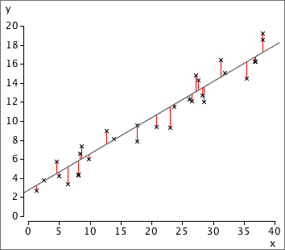
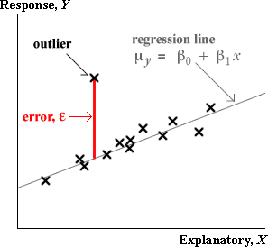
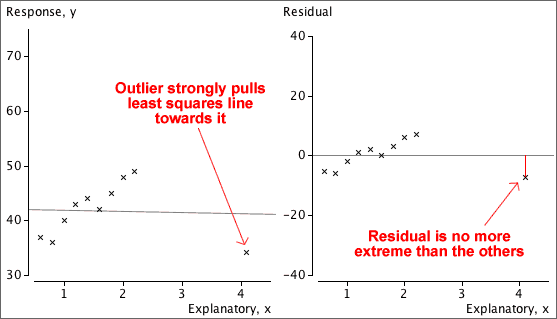
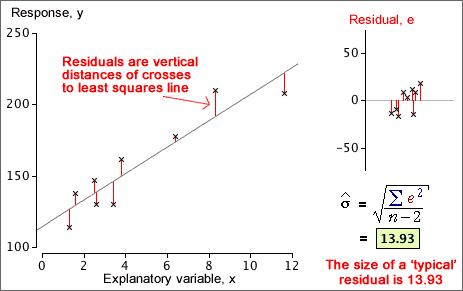
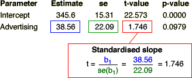
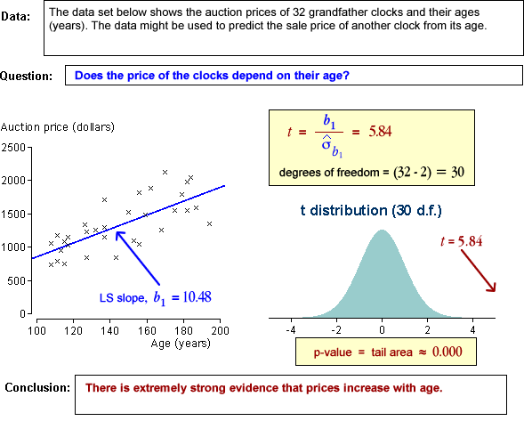
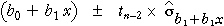
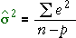

If you don't want to print now,
Response and explanatory variables
With bivariate data, it is often useful to predict the value of one variable (the response variable, Y) from the other (the explanatory variable, X).
A curve or straight line that is drawn close to the crosses on a scatterplot can be used to predict the y-value corresponding to any x.
Note that the response variable should always be drawn on the vertical axis.
Linear model
A linear model is an adequate description of many bivariate data sets:
y = b0 + b1 x
The constant b0 is the intercept of the line and describes the y-value when x is zero. The constant b1 is the line's slope; it describes the change in y when x increases by one.

Fitted values
To assess how well a particular linear model fits any one of our data points, (xi, yi), we might consider how well the model would predict the y-value of the point,
| = b0 + b1 xi |
These predictions are called fitted values.
Residuals
The difference between the i'th fitted values and its actual y-value is called its residual.
| ei = yi − |
The residuals describe the 'errors' that would have resulted from using the model to predict y from the x-values of our data points.

Note that the residuals are the vertical distances of the crosses to the line.
Aim of small residuals
The residuals from a linear model (vertical distances from the crosses to the line) indicate how closely the model's predictions match the actual responses in the data.

'Good' values for b0 and b1 can be objectively chosen to be the values that minimise the residual sum of squares. This is the method of least squares and the values of b0 and b1 are called least squares estimates.
The diagram below respresents the squared residuals as blue squares. The least squares estimates minimise the total blue area.

Bivariate data: population or sample?
In most bivariate data sets, we have no interest in the specific individuals from which the data are collected. The individuals are 'representative' of a larger population or process, and our main interest is in this underlying population.
Example
A newspaper compiled data from each of New Jersey's 21 counties about the number of people per bank branch in each county and its percentage of minority groups.

Local residents might be interested in the specific counties, but most outsiders would want to generalise from the data to describe the relationship in a way that might describe other similar areas in the Eastern USA. How strong is the evidence that banks tend to have fewer branches in areas with large minority groups?
Response distribution at each X
In an experiment, several response measurements are often made at each distinct value of X. The diagram below shows one such data set using a histogram for the distribution of Y at each x-value.

Model for data
The response measurements at any x-value can be modelled as a random sample from a normal distribution. The collection of distributions of Y at different values of X is called a regression model.

Normal linear model for the response
The most commonly used regression model is a normal linear model. It involves:
The last two properties of the normal linear model can be expressed as
σy = σ
μy = β0 + β1x
Alternative descriptions of the model
The normal linear model describes the distribution of Y for any value of X:
Y ~ normal (μy , σy)
where
μy = β0 + β1x
σy = σ
An equivalent way to write the same model is...
y = β0 + β1x + ε
where ε is called the model error and has a distribution
ε ~ normal (0 , σ)
The error, ε , for a data point is the vertical distance between the cross on a scatterplot and the regression line.

Band containing about 95% of values
Applying the 70-95-100 rule of thumb to the errors, about 95% of them will be within 2 standard deviations of zero — i.e. between ±2σ.
Since the errors are vertical distances of data points to the regression line, a band 2σ on each side of it should contain about 95% of the crosses on a scatterplot of the data.

Slope and intercept
A normal linear model,
μy = β0 + β1x
σy = σ
involves 3 parameters, β0, β1 and σ. The model's slope, β1, and intercept, β0, can be interpreted in a similar way to the slope and intercept of a least squares line.
Examples of interpretation
| Context | Interpretation of β1 | Interpretation of β0 |
|---|---|---|
| Y = Sales of a band's new album ($) X = Money spent on advertising ($) |
Increase in mean sales for each extra dollar spent on advertising | Mean sales if there was no advertising |
| Y = Exam mark X = Hours of study by student before exam |
Increase in expected mark for each additional hour of study | Expected mark if there is no study |
| Y = Hospital stay (days) X = Age of patient |
Average extra days in hospital per extra year of age | Average days in hospital at age 0. Not particularly meaningful here. |
Assumptions
The normal linear model is:
y = β0 + β1x + ε
ε ~ normal (0 , σ)
The following four requirements are implicit in the model but may be violated, as illustrated by the examples.
Linearity The response may change nonlinearly with x.
|
Constant standard deviation The response may be more variable at some x than others.
|
Normal distribution for errors The errors may have skew distributions.
|
Independent errors When the observations are ordered in time, successive errors may be correlated.
|
Detecting problems
Problems may be immediately apparent in a scatterplot of the raw data, but a residual plot often highlights them.

Normal probability plot of residuals
The normal linear model assumes that the model errors are normally distributed,
ε ~ normal (0 , σ)
A histogram of the residuals can be examined for normality but a better way is with a normal probability plot of the residuals. If the residuals are normally distributed, the crosses in the normal probability plot should lie close to a straight line.

Warning
If the assumptions of linearity and constant variance are violated, or if there are outliers, the probability plot of residuals will often be curved, irrespective of the error distribution.
Only draw a probability plot if you are sure that the data are linear, have constant variance and have no outliers.
Outliers and errors
In a scatterplot, a cross that is unusually far above or below the regression line is an outlier. It would correspond to a large error, ε.

Residual plot
Outliers are usually clearer if the residuals are plotted against X rather than the original response.

Standardised residuals
To help assess the residuals, we usually standardise them — dividing each by an estimate of its standard deviation.
| standardised residual = | e |
| se |
The standardised residuals are each approximately normal (0, 1) if the normal linear model fits, so only about 5% will be outside the range ±2, and hardly any outside the range ±3.
Standadised residuals greater than 3 or less than -3 are often taken to indicate possible outliers.
Note however that in a large data set of 1,000 values, we would expect 50 values outside ±2 and 3 values outside ±3. Values a little outside ±3 can occur by chance.
Problems with residuals as indicators of outliers
All data points pull the least squares line towards themselves — the line is positioned to minimise the sum of squares of the residuals
minimise 
Large residuals pull very strongly on the line since they are squared in the least squares criterion. As a result,
Outliers will strongly pull the least squares line towards themselves, making their residuals smaller than you might otherwise expect.
Leverage
If an outlier corresponds to an x-value near its mean, it usually will have a large residual,

However if the outlier occurs at an extreme x-value, it has a stronger influence on the position of the least squares line than the other data points. Such points are called high leverage points and pull the least squares line strongly towards them. Outliers that are high leverage points may therefore result in residuals that do not stand out from the other residuals.

Least squares
In practical situations, we must estimate β0, β1 and σ from a data set that we believe satisfies the normal linear model.
The best estimates of β0 and β1 are the slope and intercept of the least squares line, b0 and b1
Since b0 and b1 are functions of a data set that we assume to be a random sample from the normal linear model, b0 and b1 are themselves random quantities and have distributions.
Simulated example
The diagram below represents a regression model with a grey band. A sample of 20 values has been generated from this model and the least squares line (shown in blue) has been fitted to the simulated data. The least squares line provides estimates of the slope and intercept but they are not exactly equal to the underlying model values.

A different sample would give 20 different points and a different least squares line, so the least squares slope and intercept are random.
Errors and residuals
The error, ε, for any data point is its vertical distance from the regression line.
In practice, the slope and intercept of the regression line are unknown, so the errors are also unknown values, but the least squares residuals provide estimates.

Estimating the error standard deviation
The third unknown parameter of the normal linear model, σ, is the standard deviation of the errors,
σ = st devn( ε )
σ can be estimated from the least squares residuals, {ei},

This is similar to the formula for the standard deviation of the residuals, but uses the divisor (n − 2) instead of (n − 1). It describes the size of a 'typical' residual.
Example

Distribution of the least squares slope and intercept
The least squares line varies from sample to sample — it is random.

The least squares estimates b0 and b1 of the two linear model parameters β0 and β1 therefore also vary from sample to sample and have normal distributions that are centered on β0 and β1 respectively.

Standard error of slope
When the least squares slope, b1, is used as an estimate of β1, it has standard error,

where
Implications for data collection
The standard error of b1 is lowest when:
To get the most accurate estimate of the slope from experimental data,
However don't just collect data at the ends of the 'acceptable' range of x-values, even though this maximises sx.

Does the response depend on X?
In a normal linear model, the response has a distribution whose mean, µy, depends linearly on the explanatory variable,
Y ~ normal (μy , σy)
If the slope parameter, β1, is zero, then the response has a normal distribution that does not depend on X.
Y ~ normal (β0 , σ)
This can be tested formally with a hypothesis test for whether β1 is zero.
Hypothesis test
H0 : β1 = 0
HA : β1 ≠ 0
The test is based on the 'statistical distance' of b1 from zero,

and this has a t distribution with (n - 1) degrees of freedom if there really is no relationship.

Using output from statistical software
Computer software will provide everything you need to perform the test in its regression output:




Examples


Strength of relationship vs strength of evidence for relationship
It is important to distinguish between the correlation coefficient, r, and the p-value for testing whether there is a relationship between X and Y.
It is important not to confuse these two values when interpreting the p-value for a test.
This is partly explained by an alternative formula for the test statistic,

The test statistic and the p-value therefore both depend on both r and the sample size, n. Increasing n and increasing r both result in a lower p-value.

Predicting the response at x
Our point estimate (best guess) for a the response at a particular value of x is
 = b0 + b1 x
= b0 + b1 x
Note that the least squares line should only be used for prediction when the linear model assumptions hold. In particular there should be:
It is also dangerous to predict far outside the range of the x's we have used to fit the model (the training data) since we have no information about whether the relationship remains linear. This is called extrapolation.
A normal linear model provides a response distribution for all X. With estimates for all three model parameters, we can obtain the approximate response distribution at any x-value, even if we have no data at that x-value.

What affects the accuracy of a prediction?
The predicted response at X is
 = b0 + b1 x
= b0 + b1 x
and has a normal distribution with mean
μy = β0 + β1x
Its standard deviation depends on the value x at which the prediction
is being made. The further x is from
its mean in the training data,  ,
the greater the variability in the prediction.
,
the greater the variability in the prediction.
Simulation
The effect of the x-value on the variability of the predicted response can be shown using least squares lines fitted to simulated data:

The diagram below shows two theoretical distributions from the above model. (The spread would be even greater for predicting at x = 10.)

Estimating the mean response
In some situations, we are interested in estimating the mean response at some x-value,
μy = β0 + β1x
The least squares estimate,
 = b0 + b1 x
= b0 + b1 x
becomes increasingly accurate as the sample size increases (since b0 and b1 become more accurate estimates of β0 and β1).
Predicting a single item's response
To predict the response for a single new individual with a known x-value, the same prediction would be used,
 = b0 + b1 x
= b0 + b1 x
However no matter how accurately we estimate the mean response for such individuals, a single new individual's response will have a distribution with standard deviation σ around this mean and we have no information to help us predict how far it will be from its mean. The prediction error cannot have a standard deviation that is less than σ.
The error in predicting an individual's response is usually greater than the error in estimating the mean response.
Simulation
The diagram below contrasts estimation of the mean response and prediction of a new individual's response at x = 5.5. Least squares lines have been fitted to several simulated data sets, one of which is shown on the left. The two kinds of errors from the simulations are shown on the right, showing that the prediction errors are usually greater.

The same value,
| = b0 + b1 x |
is used both to estimate the mean response at x and to predict a new individual's response at x, but the errors are different in the two situations — they tend to be larger for predicting a new value.
95% confidence interval for mean response

A formula for the standard error on the right exists, but you should rely on statistical software to find its value.
95% prediction interval for a new individual's response
For prediction, a similar interval is used:

where k is greater than the corresponding standard error for the confidence interval. Statistical software should again be used to find its value.
Example
The diagram below shows 95% confidence intervals for the mean response at x and 95% prediction intervals for a new response at x as bands for a small data set with n = 7 values.

Extrapolation
These 95% confidence intervals and 95% prediction intervals are valid within the range of x-values about which we have collected data, but they should not be relied on for extrapolation. Both intervals assume that the normal linear model describes the process, but we have no information about linearity beyond the x-values that have been collected.
Total variation
| The total sum of squares reflects the total variability of the response. |
The overall variance of all response values is the total sum of squares divided by (n - 1).

Explained variation (signal)
| The explained sum of squares is the variation that is explained by the model. |

Residual variation (noise)
| The residual sum of squares is the unexplained variation. |
Note that the pooled estimate of the error variance, σ2, is the residual sum of squares divided by (n - 2).

Relationship between sums of squares
The following relationship requires some algebra to prove but is important.

Coefficient of determination
A useful summary statistic is the proportion of the total variation that is explained, the coefficient of determination, R2,

A proportion (1 - R2) of the total variation remains unexplained by the model.
Although it is derived with quite a different aim,

Example

Response and explanatory variables
We are often interested in how a 'response' variable, Y, depends on other explanatory variables. If there is a single explanatory variable, X, we can predict Y from X with a simple linear model of the form,
y = b0 + b1 x
However if other explanatory variables have been recorded from each individual, we should be able to use them to predict the response more accurately.
Adding extra variables
A simple linear model for a single explanatory variable,
y = b0 + b1 x
can be easily extended to describe the effect of a second explanatory variable, Z, with an extra linear term,
y = b0 + b1 x + b2 z
and so on with more explanatory variables,
y = b0 + b1 x + b2 z + b3 w + ...
This type of model is called a multiple regression model.
Coefficients
Despite our use of the same symbols (b0, b1, ...) for all three models above, their 'best' values are often different for the different models. An example will be given in the next page.
Marginal and conditional relationships
In a linear model that predicts a response from several explanatory variables, the least squares coefficient associated with any explanatory variable describes its effect on the response if all other variables are held constant. This is also called the variable's conditional effect on the response.
This may be very different from the size and even the sign of the coefficient when a linear model is fitted with only that single explanatory variable. This simple linear model describes the marginal relationship between the response and that variable.
Example
In a model for predicting the percentage body fat of men, the best model (as determined by least squares) in a simple model with weight, is
Predicted body fat = -10.00 + 0.162 Weight
However if we add Abdomen circumference to the model, the best values for the coefficients are
Predicted body fat = -41.35 - 0.136 Weight + 0.915 Abdomen
General linear model
The general linear model is
y = β0 + β1 x1 + β2 x2 + β3 x3 + ... + ε
where
ε ~ normal (0, σ)
Parameter estimates and standard errors
The best estimates of β0, β1, ... are the least squares estimates, b0, b1, ...
The best estimate of σ2 is the residual sum of squares, divided by its degrees of freedom,

where n is the number of observations and p is the number of β-parameters (i.e. the number of explanatory variables plus 1).
The least squares estimates, b0, b1, ... are random quantities and have distributions. The formulae for their standard errors are complex but statistical software will report their values.
Example
The equation below gives the least squares equation for predicting the percentage body fat of men, based on other body measurements.

The table below shows the standard errors of these coefficients and the estimate of the error standard deviation, σ.

Hypothesis tests for single parameters

This test asks whether the corresponding explanatory variable can be dropped from the full model.
The test statistic is the 'statistical distance' of the least squares estimate, bi, from zero,

and its p-value is found from the tail area of the t distribution with (n - p) degrees of freedom.
Interpretation of p-values
The p-values are interpreted in the usual way as the strength of evidence against the null hypothesis.
However each p-value assesses whether you can drop a single explanatory variable from the full model. After dropping one variable from the full model, the p-values for the other variables will change and they may no longer be unimportant.
If several explanatory variables have high p-values, this does not give evidence that you can simultaneously drop all of them from the model.
Example
The table below shows the p-values for testing whether the individual parameters are zero in the body fat model. Several p-values are higher than 0.1, giving evidence that these variables could be dropped from the full model but this does not mean that we could drop all such variables simultaneously.

What you need to know
You will not be examined about everything in this chapter. Some of the material has been included to explain why the chapter's methods are used, in the hope that it will help you to understand these methods better. What you need to learn for the exam is more limited.
We now describe what we expect you to be able to do in the assignment and exam after studying the regression chapter.
A. Simple linear regression
Simple linear regression models are used to predict the value of a "response" from a single "explanatory" variable.
B. Multiple regression
Multiple regression models extend the idea of simple linear regression with two or more explanatory variables. Given Excel output from a multiple regression model, you should be able to: